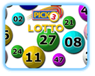

Modifying Algorithms
When the vector elements may be modified, or where the positions of the elements is important, the counter-controlled for loop is the loop of choice, because the size() member function creates a natural bounds, and because the loop index can do double-duty as the subscript to access the vector elements.
The elements in a vector often need to be rearranged for a variety of reasons. You may want to sort the names in a list, update the prices in a price list, randomly shuffle the cards in a deck, or reverse the characters in a string.

Consider this problem: you have a big glass globe filled with 50 "lotto" balls. Each ball is numbered. You want to pick three of the balls for a lottery game called "Pick 3 Lotto".
- The numbers have to be randomly selected between 1 and 50 (inclusive)
- No number can appear twice
You may be tempted to start with this code, using the rand() function from <cstdlib>:
int n1{1 + rand() % 50};
int n2{1 + rand() % 50};
int n3{1 + rand() % 50};Unfortunately, this generates duplicates, (that is, 2 of the 3 numbers will be the same), about 8% of the time, which is an impossibility in the game you're trying to simulate. (That's why you can't use this method for selecting cards from a deck of cards.)
Instead, the best way to solve this problem is to put all of the lottery balls (numbers) into a vector, shuffle the vector, and then pick the first three lottery balls, which are now randomly ordered.
 This course content is offered under a
CC
Attribution Non-Commercial license. Content in this course
can be considered under this license unless otherwise noted.
This course content is offered under a
CC
Attribution Non-Commercial license. Content in this course
can be considered under this license unless otherwise noted.